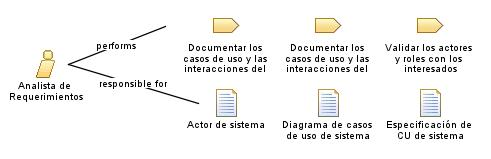

| Role: Analista de Requerimientos |
| |
 |
| Encargado de analizar, documentar y gestionar los requerimientos de un módulo de facturación y contabilidad. Su objetivo principal es comprender las necesidades de los usuarios y los objetivos del negocio, traduciéndolos en requisitos funcionales y no funcionales claros y precisos. |
| Synonyms: Analista
Funcional |
|
Relationships
 |
| Primary Performs |
|
| Modifies |
|
Main Description
|
Trabaja en colaboración con los interesados, como los contadores, los administradores y los usuarios finales, para
identificar y documentar los requisitos funcionales, como la generación de facturas, el seguimiento de pagos y la
generación de informes financieros. También se encarga de recopilar los requisitos no funcionales, como la seguridad de los
datos y la escalabilidad del sistema, asegurándose de que los requerimientos estén correctamente definidos y sean
coherentes con los objetivos del negocio. |
Staffing
| Skills | Resolución
de problemas, analisis, observación, habilidades de organización y modelado |
| Synonyms | Analista
Funcional |
|